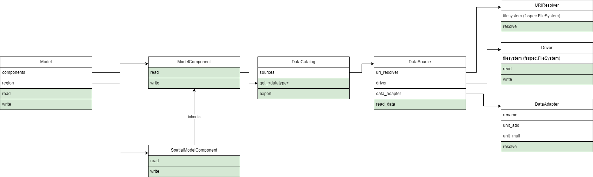

Architecture#
HydroMT supports a large variety of models, which all require different types of data. It is therefore important that the API that HydroMT exposes is extendable. HydroMT is composed of a small set of key classes that support extension. In this section we walk through these classes and describe their main responsibilities and where they interact.
Model#
The Model is the main representation of the model that is being built. A
model is built step by step by adding ModelComponent s to the
Model. Plugins can define steps which act on these components to implement
complex interactions between different components. The area of interest for the model
can be defined by the SpatialModelComponent. The complete
model building workflow can be encoded in a workflow file file.
ModelComponent#
A Model can be populated with many different
ModelComponent s. A component can represent any type of data
you have on your area of interest. This component can have many properties, but always
has a read() and
write() component to read in and write out data. A
Model must have at least one ModelComponent.
DataCatalog#
Model s need data. Where the data should be found and how it
should be loaded is defined in the DataCatalog. Each item in the
catalog is a DataSource. Users can create their own
catalogs, using a yaml format, or they can share their
PredefinedCatalog using the Plugins system.
DataSource#
The DataSource is the python representation of a parsed
entry in the DataCatalog. The source is responsible for
validating the catalog entry. It also carries the
DataAdapter,
URIResolver and
Driver and serves as an entrypoint to the data.
Per HydroMT data type (e.g. RasterDataset, GeoDataFrame), HydroMT has one
DataSource, e.g.
RasterDatasetSource,
sources.geodataframe.GeoDataFrameSource. The
read() method governs the full process of discovery
with the URIResolver, reading data with the
Driver, and transforming the data to a HydroMT
standard with a DataAdapter.
URIResolver#
Finding the right address where the requested data is stored is not always
straightforward. Searching for data differs between finding data in a web-service,
database, a catalog or when dealing with a certain naming convention. Exploring where
the right data can be found is implemented in the URIResolver. The
URIResolver takes a single uri from the data catalog, and the query
parameters from the model, such as the region, or the time range, and returns multiple
absolute paths, or uri s, that can be read into a single python representation (e.g.
xarray.Dataset). The URIResolver is extendable, so Plugins or other
code can subclass the Abstract URIResolver class to implement their own
conventions for data discovery.
Driver#
The Driver class is responsible for reading a
set of geospatial data formats, like a geojson file or zarr archive, into their
python in-memory representations: geopandas.GeoDataFrame or
xarray.Dataset respectively. This class can also be extended using the
Plugins. Because the merging of different files from different
DataSource s can be non-trivial, the driver is responsible
to merge the different python objects coming from the driver to a single representation.
This is then returned from the read() method. The query parameters vary per
HydroMT data type, so there is is a different driver interface per type, e.g.
RasterDatasetDriver,
GeoDataFrameDriver. To help with
different filesystems, the driver class is handed a fsspec.Filesystem.
DataAdapter#
The DataAdapter homogenizes the
data coming from the Driver. This means slicing
the data to the right region, renaming variables, changing units, regridding and more.
The adapter has a transform() method that takes a python object and returns the
same type, e.g. an xr.Dataset. This method also accepts query parameters based on the
data type, so there is a single
DataAdapter per HydroMT data type.
Architecture Diagram#
The above is summarized in the following architecture diagram. Only the aforementioned methods and properties are used.
{kind=link}